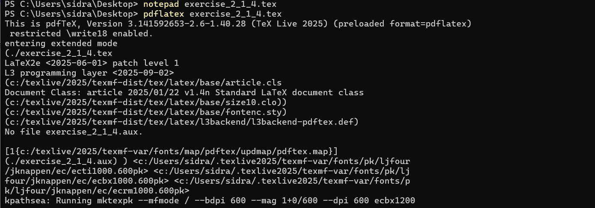
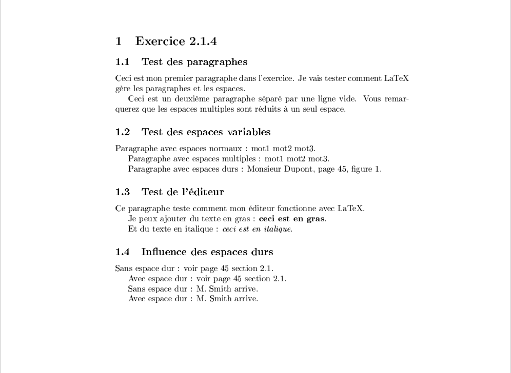
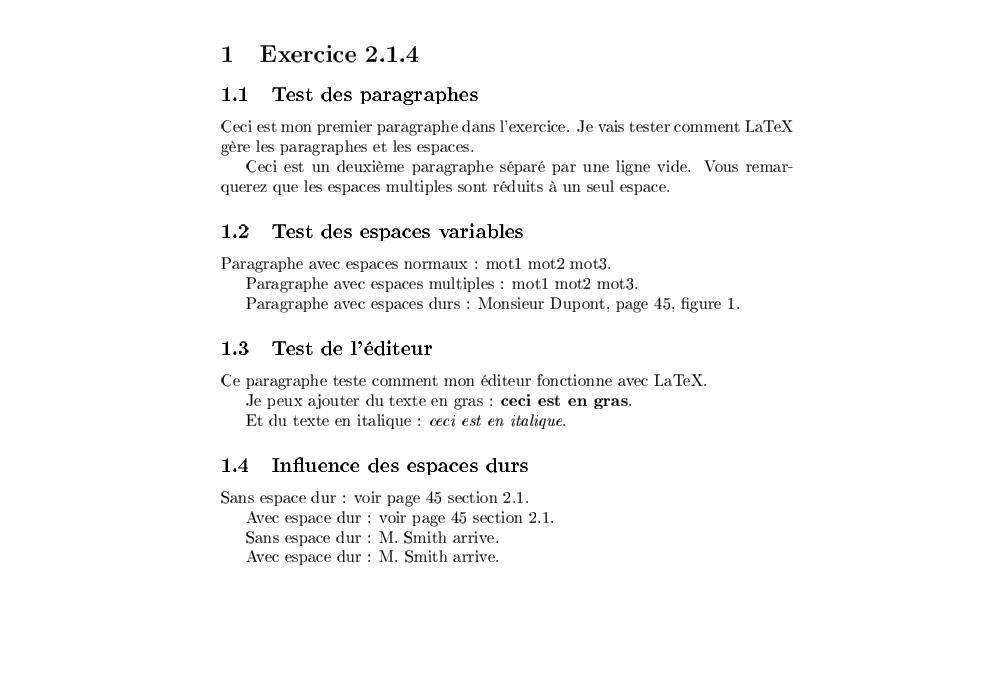
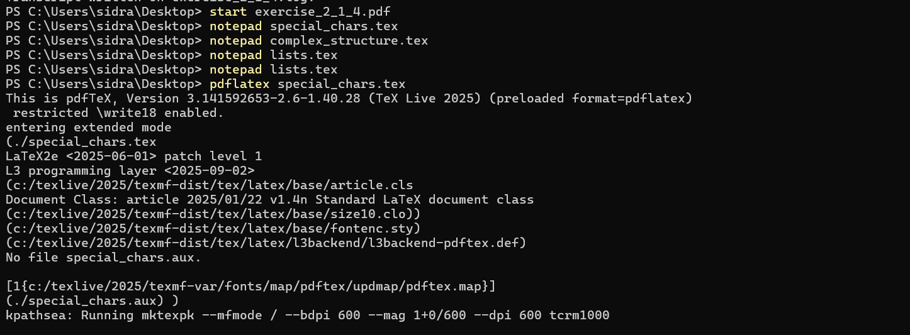
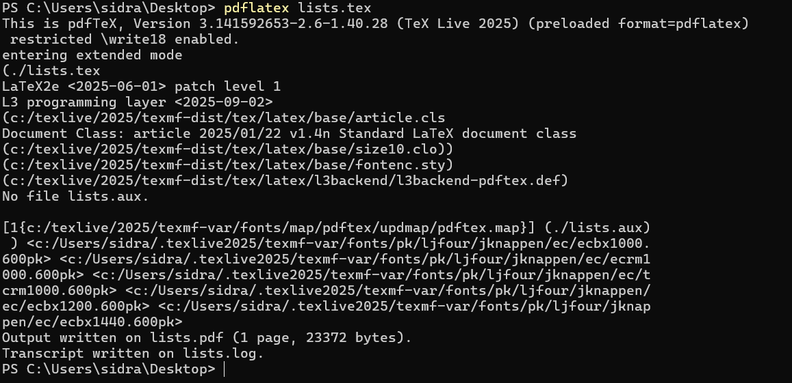
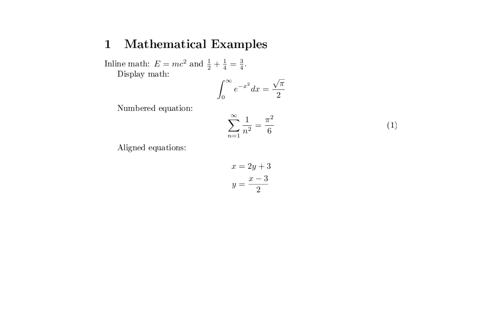
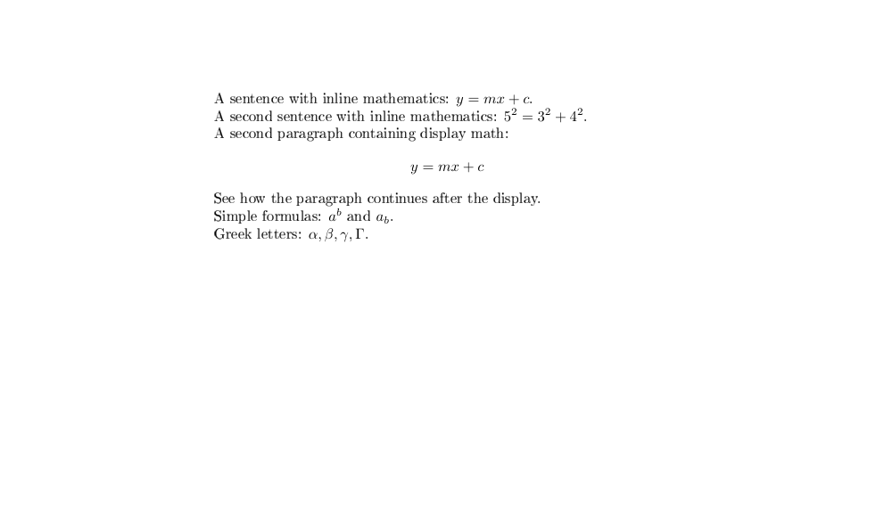
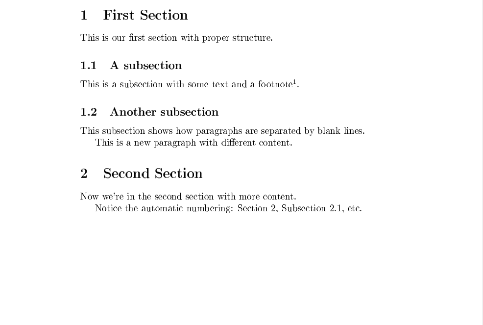
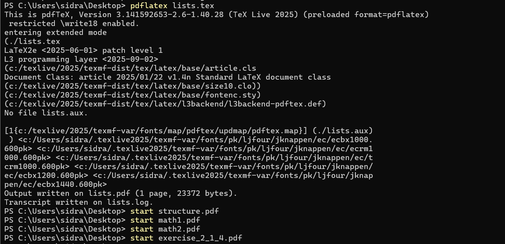

Изучение базовых и расширенных возможностей системы LaTeX для набора
математических выражений и структурированного текста. В рамках работы
рассматривались встроенный и отображаемый математический режимы, правила
ввода формул, использование пакета amsmath, а также влияние
различных параметров и приёмов форматирования на итоговый вид
документа.
exercise_2_1_4.texНа первом этапе был открыт исходный файл
exercise_2_1_4.tex и выполнена его компиляция командой
pdflatex.
В процессе сборки использовался движок pdfTeX из
дистрибутива TeX Live 2025 (формат
pdflatex). В выводе компилятора отображается загрузка
стандартного класса документа article, подключение пакета
кодировок fontenc, а также PDF-бэкенда
l3backend-pdftex.def. Сообщение
No file exercise_2_1_4.aux указывает на первый запуск
компиляции. Дополнительно была выполнена автоматическая генерация
шрифтов с помощью mktexpk.
Результат выполнения компиляции представлен на скриншоте:

exercise_2_1_4.pdfВ результате компиляции был получен PDF-документ с заголовком Exercise 2.1.4, содержащий несколько подразделов и демонстрирующий базовые принципы текстовой разметки в LaTeX.
В документе показано: - формирование абзацев при помощи пустых строк; - автоматическое сокращение нескольких пробелов до одного; - применение жирного и курсивного начертания текста; - влияние неразрывных пробелов на оформление ссылок и инициалов (например, “page 45”, “M. Smith”).
Визуальный результат представлен на скриншоте:

Для более детальной проверки структуры и переносов строк документ был дополнительно просмотрен в увеличенном виде:

special_chars.texДалее был открыт файл special_chars.tex и выполнена его
компиляция командой pdflatex.
Вывод компилятора подтверждает корректную загрузку класса
article и пакета fontenc. Сообщение
No file special_chars.aux также указывает на первый запуск.
В процессе компиляции были успешно подключены и сгенерированы
необходимые шрифтовые файлы.
Результат компиляции показан на скриншоте:

lists.texСледующим этапом стала компиляция файла lists.tex.
В выводе компилятора зафиксировано успешное завершение сборки,
создание файла lists.pdf и журнала lists.log.
Документ сформирован на одной странице, что подтверждается итоговой
строкой компилятора.
Результат компиляции представлен на скриншоте:

Для выполнения задания по разделу Mathematics Typing были
подготовлены отдельные документы с примерами математического набора,
демонстрирующие работу inline- и display-режимов, а также расширенные
возможности пакета amsmath.
math1.pdfВ данном документе представлены: - встроенные математические формулы
(inline math) внутри текста; - отображаемые формулы (display math) в
виде отдельного блока; - нумерованное уравнение, оформленное в окружении
equation; - многострочные формулы с выравниванием,
демонстрирующие работу окружений выравнивания.
Результат показан на скриншоте:

math2.pdfВо втором математическом примере выполнено сравнение встроенного и отображаемого математического режима.
В документе показано: - использование inline-формул вида
y = mx + c и 5^2 = 3^2 + 4^2; -
display-формула, вынесенная в отдельный блок, после которой продолжается
текст абзаца; - применение верхних и нижних индексов (a^b,
a_b); - вывод греческих букв, включая строчные и
заглавные.
Результат представлен на скриншоте:

structure.pdfОтдельно был скомпилирован документ, демонстрирующий структурирование
текста с помощью команд \section и
\subsection. В документе наглядно показана автоматическая
нумерация разделов и подразделов, а также пример использования
сноски.
Результат отображён на скриншоте:

После завершения компиляции все полученные PDF-файлы были открыты
стандартными средствами операционной системы для визуальной проверки
корректности отображения. Были просмотрены файлы
structure.pdf, math1.pdf,
math2.pdf и exercise_2_1_4.pdf.
Факт открытия файлов подтверждается выводом командной строки:

В ходе выполнения работы были последовательно изучены и проверены основные приёмы работы с LaTeX-документами и математическим режимом. В частности, были успешно освоены:
Все подготовленные .tex-файлы были корректно
скомпилированы с использованием pdflatex из дистрибутива
TeX Live 2025. Полученные PDF-документы соответствуют
ожидаемому результату и наглядно демонстрируют принципы работы LaTeX при
наборе текста и математических выражений.